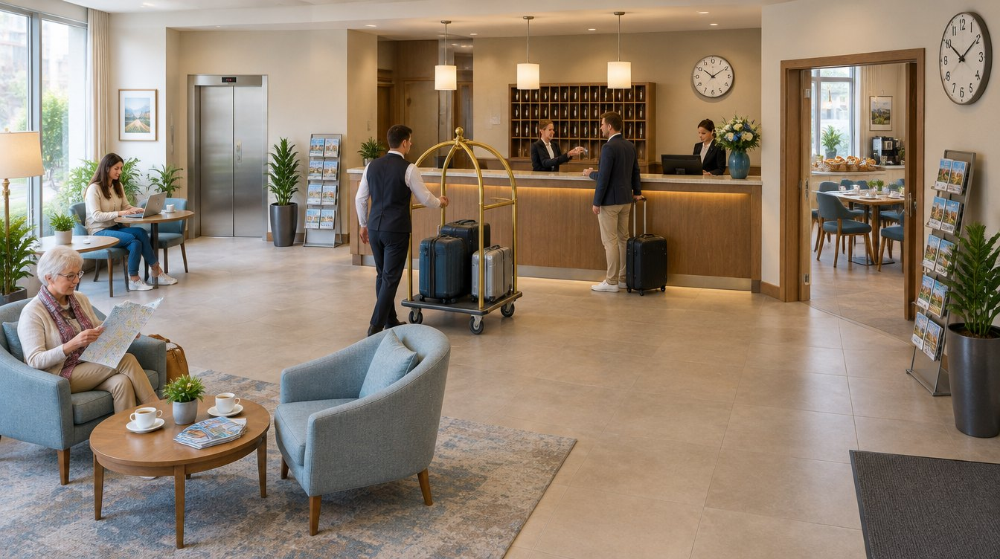

deutschoderwas · Sprachspielclub · 29. Oktober 2026 · ab B1
Im Hotel
Heute geht es um alles zwischen Ankunft und Abreise: ein Zimmer buchen, einchecken, nach dem Frühstück fragen, sich über die kalte Heizung beschweren, die Rechnung prüfen. Wir üben Wortschatz, Wechselpräpositionen, Rollenspiele und Redewendungen — und am Ende wartet das große Quiz mit acht Runden.
Beschreiben Sie genau, nicht ungefähr. Nicht: „Da ist ein Tisch.“ Sondern: „Auf dem Empfangstresen steht eine Vase mit weißen Blumen, dahinter hängt das Schlüsselfach aus Holz.“

💡 Erste Runde: Jede Person sucht sich eine Ecke des Bildes aus und erzählt eine Minute lang, was dort passiert. Die anderen dürfen danach genau zwei Fragen dazu stellen. Wer nichts mehr findet, gibt weiter.
Findet diese Sachen
Tippt ein Wort an, wenn ihr es gefunden und die Lage beschrieben habt: So soll eine Lagebeschreibung klingen: „Zwischen den beiden Sesseln steht ein runder Couchtisch, und über der Tür zum Frühstücksraum hängt eine große Wanduhr.“
0 von 28 gefunden
Die Wörter dazu
Sagt jedes Wort laut — und gleich den ganzen Beispielsatz dazu. Der Artikel gehört immer mit dazu.
💡 Spiel dazu: Verdeckt die Wörter. Eine Person beschreibt eine Karte in drei Sätzen, ohne das Wort zu nennen — die anderen raten. Tippt auf eine Karte, um sie einzeln aufzudecken.
🎁 „Ich sehe etwas, das …“
Eine Person zieht ein geheimes Wort aus dem Bild und beschreibt nur mit Präpositionen, wo es ist — die anderen raten, was es ist!
🤫 Dein geheimes Wort
Bereit?
Beschreibe seine Lage — aber sag das Wort nicht!
🗣️ So beschreibst du: „Es befindet sich …“ · „Es liegt / steht / hängt …“ + Präposition + Dativ.
🏆 Spielregeln: Nenne mindestens zwei Präpositionen, bevor die anderen raten dürfen. Wer richtig rät, bekommt einen Punkt und ist als Nächstes dran.
📍 Neun Präpositionen, zwei Fragen. Wo? fragt nach der Lage — dann kommt der Dativ. Wohin? fragt nach der Richtung — dann kommt der Akkusativ. Dieselbe Präposition, zwei Fälle.
Wo? → Dativ
Die Sache ist schon da und bewegt sich nicht. Bildet zu jeder Präposition einen eigenen Satz zum Bild.
in
„In der Lobby warten zwei Gäste auf ihren Schlüssel.“
an
„An der Rezeption meldet man sich zuerst an.“
auf
„Auf dem Empfangstresen steht eine Vase mit weißen Blumen.“
unter
„Unter dem Couchtisch liegt ein großer, gemusterter Teppich.“
über
„Über der Tür zum Frühstücksraum hängt eine runde Wanduhr.“
neben
„Neben dem Aufzug steht eine hohe Zimmerpflanze im grauen Topf.“
vor
„Vor dem Tresen wartet ein Gast mit einem schwarzen Rollkoffer.“
hinter
„Hinter dem Tresen hängt das Schlüsselfach aus hellem Holz.“
zwischen
„Zwischen den beiden Sesseln steht ein runder Couchtisch.“
🧠 Dativ-Artikel: der → dem · das → dem · die → der · Plural → den (+n).
Wohin? → Akkusativ
Etwas bewegt sich irgendwohin. Achtet auf das Verb: gehen, legen, stellen, werfen — das sind die Verräter.
in + Akk.
„Der Gast geht mit dem Koffer in den Aufzug und fährt in den dritten Stock.“
auf + Akk.
„Der Page stellt die drei Koffer auf den Gepäckwagen.“
an + Akk.
„Die Rezeptionistin hängt den Schlüssel wieder an das Brett.“
unter + Akk.
„Die Gästin schiebt ihre Tasche unter den Sessel.“
über + Akk.
„Der Page legt den Mantel über die Lehne des Sessels.“
hinter + Akk.
„Die Kollegin geht mit den Unterlagen wieder hinter den Tresen.“
🧠 Akkusativ-Artikel: der → den · das → das · die → die · Plural → die. Merksatz: Wo? = Dativ (es ist schon da) · Wohin? = Akkusativ (es bewegt sich dorthin).
🎲 Spiel dazu: Eine Person sagt einen Satz mit Wo?, die nächste macht daraus einen Satz mit Wohin?. Wer den Fall verwechselt, gibt weiter.
🔤 Tabu
Erkläre das Wort oben — aber ohne die verbotenen Wörter zu benutzen! Die anderen raten. Tipp: Fang mit „Das ist ein Ort, an dem …“ oder „Das braucht man, wenn …“ an.
⏱️ Spielidee: 60 Sekunden pro Runde. Für jedes erratene Wort gibt es einen Punkt. Benutzt jemand ein verbotenes Wort, ist die Karte futsch. Zwei Teams treten gegeneinander an!
🗣️ Frei sprechen
Sprecht frei — nutzt den Wortschatz aus dem Bild.
Erinnerung
Erzählen Sie von der letzten Nacht, die Sie in einem Hotel verbracht haben. Was ist Ihnen in Erinnerung geblieben — im Guten oder im Schlechten?
Beschreiben
Beschreiben Sie das Zimmer, in dem Sie zuletzt übernachtet haben, so genau, dass wir es vor uns sehen: Größe, Licht, Geräusche, Aussicht.
Vergleich
Wie unterscheidet sich ein Hotel in Ihrem Herkunftsland von einem deutschen Hotel? Nennen Sie drei Unterschiede.
Regeln
Welche ungeschriebenen Regeln gelten im Hotel? Was macht man am Frühstücksbuffet auf keinen Fall?
Geld
Wofür geben Sie beim Reisen gern mehr aus — Zimmer, Lage oder Frühstück? Begründen Sie Ihre Reihenfolge.
Geschichte
Erzählen Sie in fünf Sätzen: Jemand kommt um Mitternacht an, die Rezeption ist nicht besetzt, das Handy ist leer. Wie geht es aus?
Diskussion
Lieber Hotel oder lieber eine Ferienwohnung? Was spricht für Ihre Wahl, und wann würden Sie sich anders entscheiden?
Streit
Bewertungen im Internet: ehrliche Hilfe für andere Gäste oder öffentliche Bestrafung kleiner Fehler? Beziehen Sie klar Position.
🔑 Redemittel fürs Bild: „Ganz vorne / hinten sieht man …“ · „Direkt daneben …“ · „Mitten im Bild / in der Ecke …“ · „Links / rechts von … befindet sich …“ · „Im Vordergrund / im Hintergrund …“
⚖️ Kleine Debatte
Sollten Hotels eine Gebühr verlangen, wenn ein Zimmer gebucht, aber ohne Absage nicht genutzt wird?
🛏️ Das Zimmer bleibt leer
Ein reserviertes Zimmer kann in der Nacht niemand anders bekommen.
Wer etwas zahlen muss, sagt eher ab — eine Mail dauert zwei Minuten.
Das Haus plant Frühstück, Reinigung und Personal für diesen Gast ein.
Flug und Mietwagen berechnen Nichterscheinen längst, niemand wundert sich dort.
⏳ Rücksicht statt Strafe
Ein verpasster Zug oder ein kranker Angehöriger ist kein böser Wille.
Die Gebühr trifft vor allem Leute mit wenig Geld und Scheu vor dem Telefon.
Eine automatische Erinnerung am Vortag wirkt besser als eine Strafe danach.
Wer Angst vor Kosten hat, bucht gar nicht erst — damit gewinnt niemand.
So sagst du deine Meinung
Ich finde, …Für mich ist …Das mag sein, aber …Da bin ich anderer Meinung, weil …Genau das ist doch das Problem: …
🎲 So geht es: Zwei Gruppen. Jede bekommt eine Seite zugelost — auch die, die sie selbst nicht glaubt. Drei Minuten sammeln, dann abwechselnd sprechen, immer ein Satz.
🎬 Rollenspiele
Zieht eine Karte, verteilt die zwei Rollen und spielt die Szene zwei bis drei Minuten. Die Wörter unten dürfen — sollen! — vorkommen.
🗣️ Nach jeder Szene, ein Satz reihum: „Ich hätte an deiner Stelle gesagt: …“ — so hört ihr drei Varianten für dieselbe Situation statt nur einer.
🏆 Das große Quiz
Acht Runden von der Rezeption bis zur Redewendung: erst Wortschatz, dann Landeskunde, Grammatik und zum Schluss echte deutsche Ausdrücke rund ums Reisen.
Runde 1 · Frage 10 von 6
🏅 Als Wettkampf: Zwei Teams, abwechselnd. Wer die richtige Antwort hat, muss zusätzlich einen eigenen Satz mit dem Wort bilden — erst dann gibt es den Punkt.